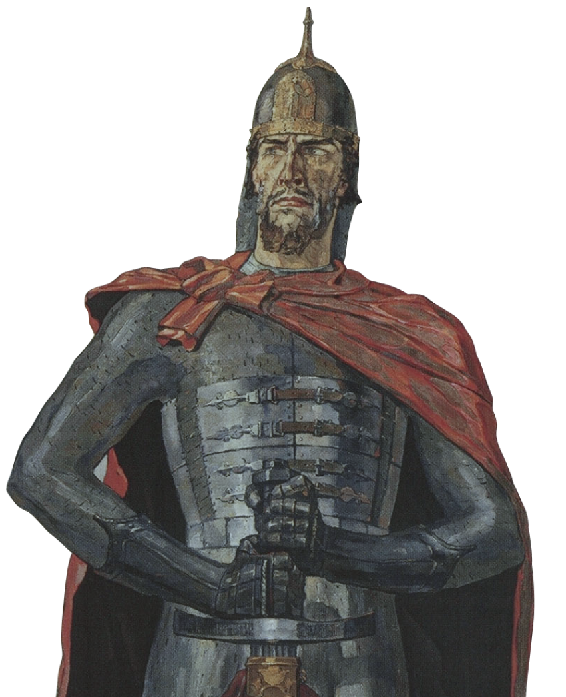
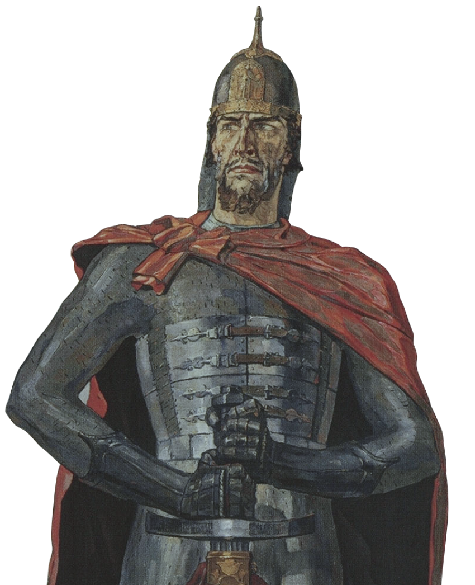

Решительный и дальновидный
Князь Александр родился в эпоху глобальных потрясений: монгольские ханы перекраивали карту мира, а в Северной Европе шла активная борьба за сферы влияния. Православная Русь многим казалась лакомым куском.
Александр воевал много и битв не проигрывал, но главное: его победы не пропадали втуне, а приносили политические плоды, в то время как дипломатические шаги нередко позволяли обойтись без лишней крови.
Прокрутите вниз
.png) 

Решительный и дальновидный
Князь Александр родился в эпоху глобальных потрясений: монгольские ханы перекраивали карту мира, а в Северной Европе шла активная борьба за сферы влияния. Православная Русь многим казалась лакомым куском.
Александр воевал много и битв не проигрывал, но главное: его победы не пропадали втуне, а приносили политические плоды, в то время как дипломатические шаги нередко позволяли обойтись без лишней крови.
Автор «Жития» очень художественно описывает нападение войск шведского короля Эрика Эриксона: «И пришел в Неву, опьяненный безумием, и отправил послов своих, возгордившись, в Новгород к князю Александру, говоря: “Если можешь, защищайся, ибо я уже здесь и разоряю землю твою”».
Как показали события, это решение действительно было безумием: легендарная битва «малой дружиной» стала первой самостоятельной победой юного князя, принеся ему громкую славу и, позднее, прозвище «Невский». Так всего одно летнее утро 1240 года решило судьбу большого завоевательного похода.
На полтора десятилетия вопрос новгородско-скандинавских войн оказался закрыт. В 1256 шведы все же предпримут еще одну попытку и начнут строить на русской границе опорную крепость – однако узнав, что Александр собирает против них дружину, сочтут разумным отступиться и покинуть территорию.

К началу княжения Александра немецкие крестоносцы плотно обосновались в Прибалтике. Своеобразным плацдармом их экспансии стала Ливония, но притязания их распространялись гораздо дальше.
Поход на Русь 1240 года начинался для рыцарей-крестоносцев весьма успешно: приступом взят Изборск, затем без боя (возможно, в результате измены) сдался Псков. Под следующий удар мог попасть богатый Новгород – однако этому помешал исход битвы на Чудском озере. «Сеча велика», прозванная Ледовым побоищем, не только нанесла немцам решительный урон, но и заставила их подписать с Новгородом мирный договор и вернуть захваченные ранее земли. Так князь Александр обеспечил длительный покой северо-западной границы Руси.


В XIII веке Литва еще не вошла в состав христианского мира. Бесстрашные и безжалостные воины, поклонявшиеся языческим богам, литовские отряды вели бесконечную «малую» войну на окраинах своих территорий как с русскими, так и с немцами. Традиция отражать литовские набеги стала для новгородских князей практически наследственной: это были разорительные, но скоротечные нападения с целью не столько захвата земель, сколько грабежа городов.
Сразу после Ледового побоища, литовцы настолько активизировались, что Александру пришлось дать им целых семь сражений, в каждом из которых он одержал победу. Передышка, однако, оказалась недолгой: всего через три года мощный удар Литвы обрушится на Торжок. Мстить за разграбленный город кинутся все соседние князья, но именно новгородское войско Александра определит исход: пытающиеся увести «большой полон» и укрывшиеся в городе Торопце литовцы будут разбиты наголову, а все пленные – освобождены.
Дальнейшее покажет князя Александра Ярославича дальновидным политиком, нацеленным на долгосрочный результат. Несмотря на впечатляющий разгром врага, он будет настаивать на продолжении похода. Воеводы его не поддержат, и войско разделится: новгородцы повернут назад, а Александр с дружиной направится в смоленские леса, которые в то время находились под контролем Литвы. Вскоре Европа услышит о двух новых крупных победах Александра: под Жижичем и под Усвятом, а северная Русь вздохнет спокойно: в литовских набегах была поставлена решительная точка.
Рим никогда не был соседом Александровых земель, но распространить на Русь свое духовное, и, следовательно, политическое и культурное влияние пытался неоднократно.
После того, как вдохновленные римским понтификом походы крестоносцев на Русь были успешно отражены новгородцами во главе с молодым князем, папа Иннокентий IV присылает к Александру кардиналов-легатов с предложением (а скорее – настоятельной рекомендацией) «присоединиться к латинской вере». В обмен он фактически предлагает военную поддержку рыцарских орденов против победившей Орды.
В предложении содержится намек и на то, что отец Александра, внезапно умерший князь Ярослав Всеволодович, намеревался принять именно такое решение, но не успел. Ответ Александра сформулирован автором его «Жития» как пространный и художественно-философский, но весьма категоричный и однозначный отказ: князь предпочел сохранить на Руси православие и искать другие способы противостояния разрушительной силе монголо-татар.
В 1237 году, когда орды хана Батыя обрушились на Русь, Александр уже год как вышел из-под опеки отца и был полновластным князем Новгородским. По меркам нашего времени, он был еще очень юн: не более 16 лет. Тем не менее, князь готовился возглавить оборону Новгородских земель – если не безнадежную, то обещавшую быть крайне непростой: монгольские армии, значительно превосходившие русских числом, смели и сожгли на своем пути уже не один город. Новгородцам повезло: разгромив расположенный на их землях Торжок, отряды Батыя внезапно повернули назад. Причины такой смены курса остались неясны, но этот поворот событий дал Александру возможность накопить силы и через несколько лет отразить нападения и шведов, и немцев.

Вступить в непосредственный контакт с Ордой Александру пришлось лишь в 1247 году, когда странным образом внезапно умер его отец. Великий князь Киевский Ярослав был одной из ключевых фигур переговорного процесса с монгольскими ханами, и есть основания полагать, что именно в Орде он был отравлен. Александр, чтобы унаследовать княжение, был вынужден тоже отправиться за «ярлыком», дававшим теперь право на политическую власть. По всей видимости, он, уже овеянный ратной славой, заслужил в Орде большой личный авторитет, который в дальнейшем помог ему добиться очень серьезных уступок со стороны ханов. Вероятно, самая крупная из них – отмена «налога кровью», то есть поставок Русью юношей для участия в военных походах монголов. Учитывая и без того катастрофические потери населения Руси, такая практика могла в буквальном смысле поставить русских как народ на грань физического исчезновения.

По всей видимости, такую же цену Александр мог бы заплатить и если бы принял решение героически сражаться с Ордой – ведь у Руси на тот момент просто не было сил на борьбу. Понадобится более столетия на то, чтобы восстановить мощь и дать монголам решительный отпор на Куликовом поле, а после «стояния на Угре» окончательно прекратить выплату дани и вернуться на путь независимого политического развития. И есть все основания полагать, что именно мудрость и дальновидность князя Александра Ярославича даст Руси эту необходимую передышку.

Использованы фрагменты живописных произведений П. Корина, П. Рыженко, В. Серова, Г. Семирадского.
.png)